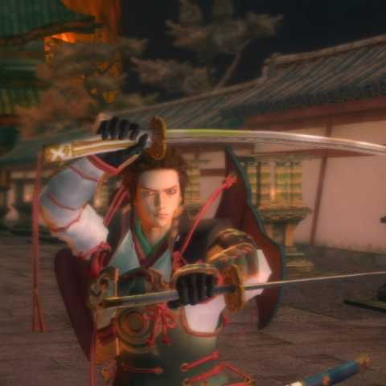

Minamoto Yoshitsune

Name of Weapons Attained
- Hizamaru
- Bishamon
- Hachiman
- Doujigiri
- Hidekiri and Usumidori
Famed hero of the late Heian period in Japan and star of the Heike Monogatari. Yoshitsune is the main character of Genji who wields dual katana, one in either hand. His fighting-style encompasses speed and agility in a graceful display of swordsmanship.